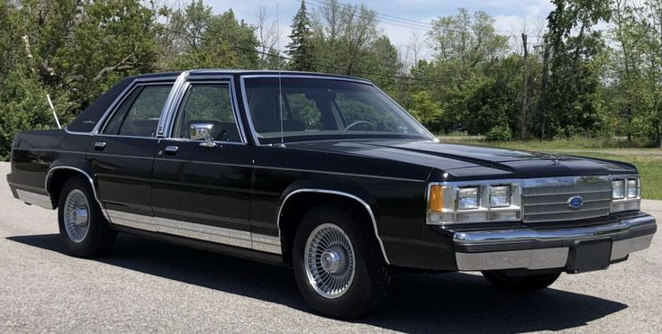
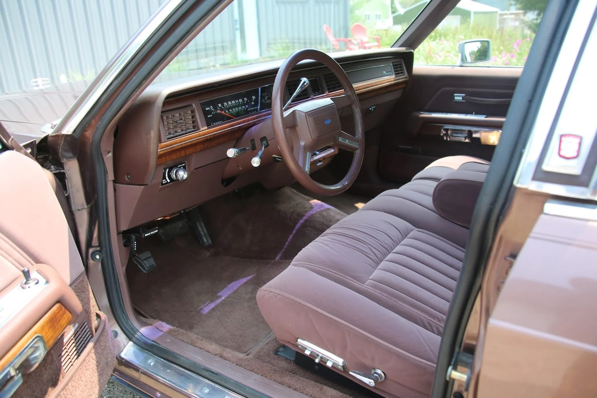

The 1989 LTD Crown Victoria
is one of my favorite sedans from the 80s.
The Ford 5.0L V8 is a powerful and reliable engine that could survive an apocalypse.
On top of that, this thing is basically a four-door Foxbody.

